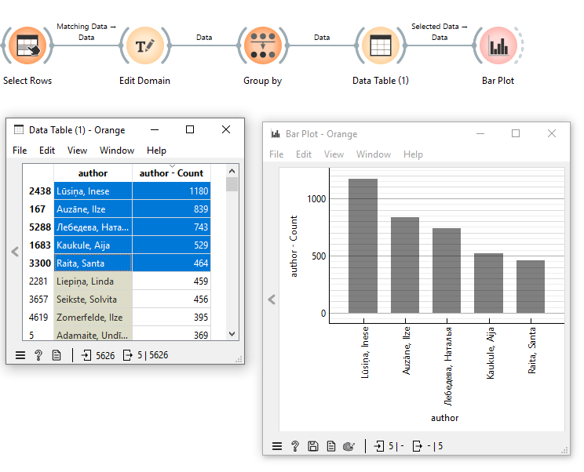
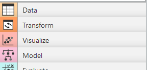
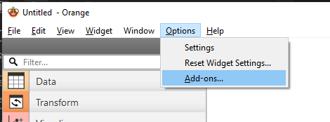
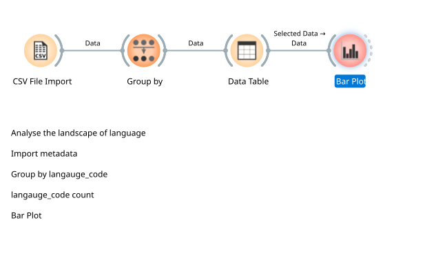
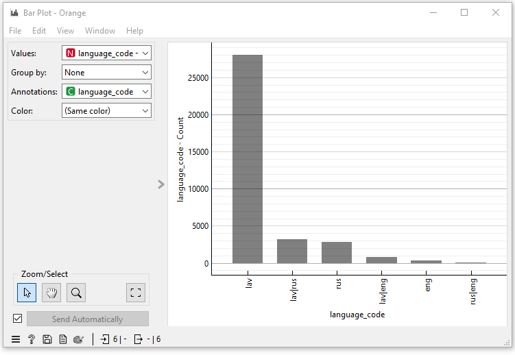
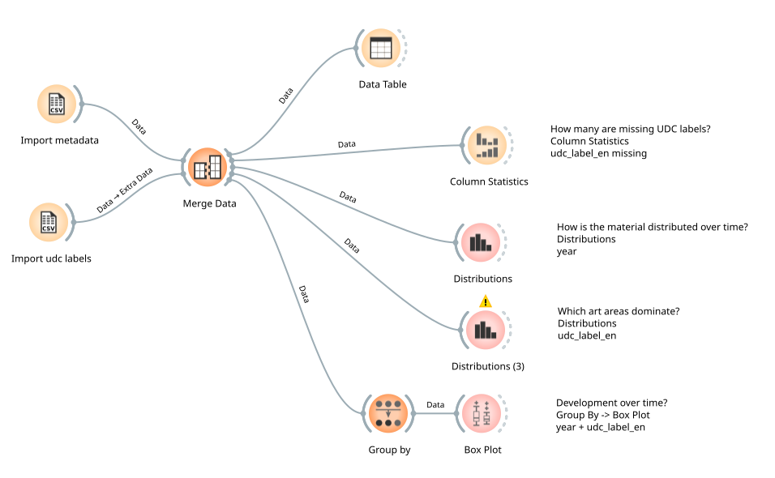
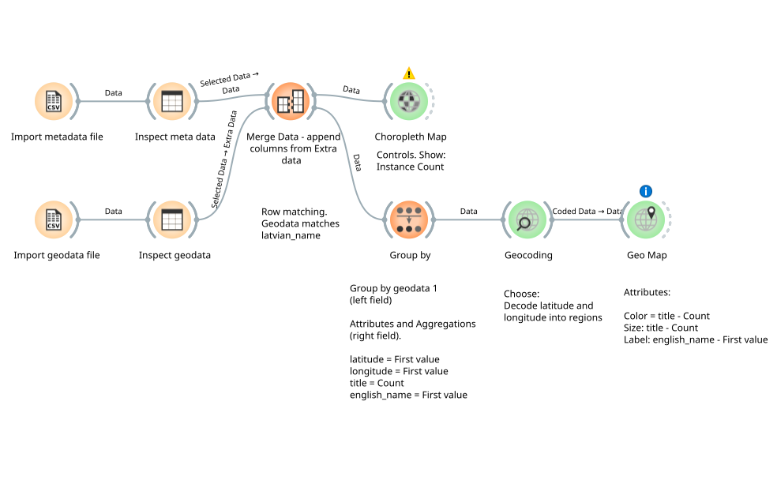
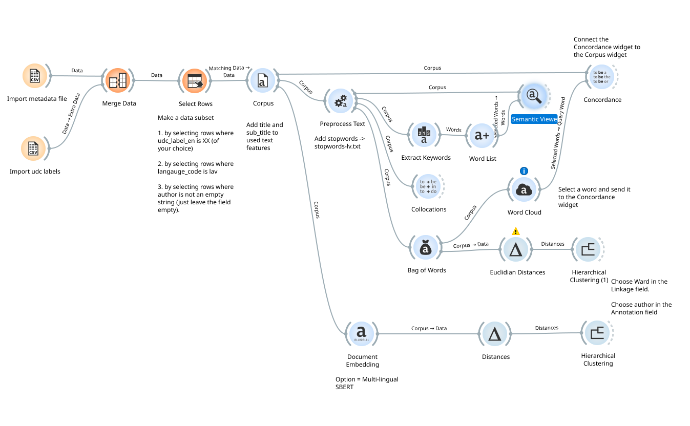
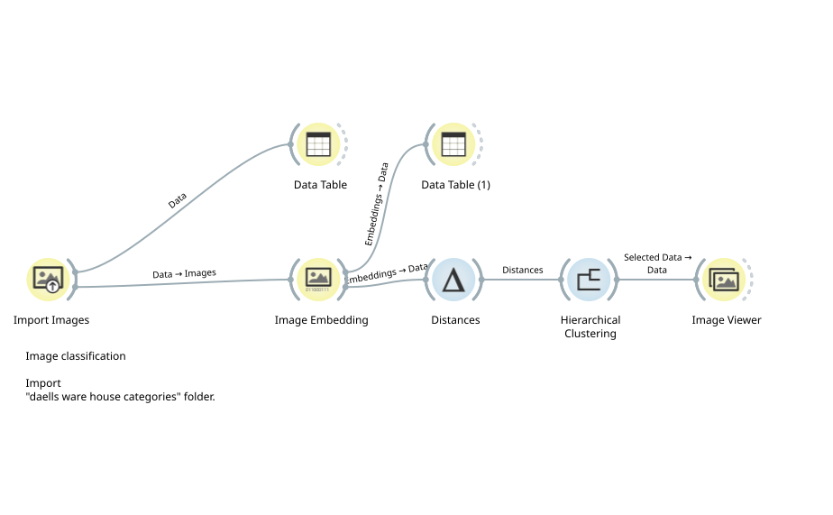

Analysis and Visualization with Orange Data Mining#
Where do I find Orange?#
Download Orange from https://orangedatamining.com/download/. Different versions are available for Windows and Mac.
When would I use Orange?#
I use Orange when I have well-ordered, structured datasets that I want to analyse and explore — for example through visualisations — and as a pedagogical tool when I want to learn about algorithms used in machine learning, AI, and text and data mining.
The program is relatively easy to get started with because you do not need to code. Everything happens visually: you place widgets — small programs — on a canvas and connect them with channels that send data from one widget to the next in a workflow. Even though it is easy to get started, the data processing and calculations inside the widgets can be very complex if you want to understand them in depth. The advantage is that you can use the program to gain a broad overview of the steps that typically form part of computer-based data analysis.
Documentation#
Orange is very well documented with text, images, and short tutorial videos on YouTube, so the hurdle of learning a new program is genuinely manageable.
Interactivity#
A great feature is that Orange’s developers have built interactivity into the widgets, so you can select data in one widget and send the selection to another. For example, you can select rows in a Data Table widget and send them to a Bar Plot widget — as in the workflow image below.

Add-ons#
Orange’s widgets are grouped into categories — for example Data, Transform, Visualize, and so on.

You add more widget groups by installing optional add-ons. That opens up further possibilities. Later in this text there are examples of workflows that use widgets beyond those installed by default.
Install add-ons by clicking Options -> Add-ons…

A new window opens. Select add-ons by checking the corresponding box. Check Geo, Image Analytics, and Text. Click OK and wait while the new add-ons install. Restart the program when prompted.
Import CSV files and build a workflow to analyse the landscape of language#
Let us learn more about Orange and data analysis — starting from the metadata dataset we worked with in OpenRefine.
Use CSV File Import to load the dataset. Then send data through Group by, Data Table, and Bar Plot as in the workflow image. Spend some time getting the settings right in Group by.

Can you produce this Bar Plot showing the languages in which the publications were written?

Merge two datasets and analyse data distribution#

When you want to add extra data to your dataset, you can use Merge Data. This requires a column with values that both datasets share. In this case there is a column of unique control numbers that can be used to combine the two datasets into one. Try building the workflow shown in the image and work through the questions on the image as well. Besides Merge Data, you will use Group by, Column Statistics, Distributions, and Box Plot.
Geocoding of geographical data in the metadata#
The Geo add-on we installed offers good options for visualising geographical data from the bibliographic metadata. In the workflow below, Geocoding, Geo Map, and Choropleth Map are used.

Can you produce a map like this?

Corpus linguistic methods on titles and sub titles#
The following workflow is extensive. Start by merging metadata and UDC labels. In Select Rows, choose three things: 1. a UDC label of your choice. 2. the language code lav. 3. rows where the author field is not empty. Then send data to Corpus, where you choose to use titles and sub_titles. Once data has passed through the Corpus widget, you can use all the text mining widgets.

And now to something different — Image classification#
One last thing worth mentioning is Image Analytics widgets, which can group images that share visual features. For this I use a small new dataset of pages from historical department store catalogues. The images are in the folder daells warehouse categories. Import the folder with Import Images and send it through a workflow like the one below. In Hierarchical Clustering the images are grouped, and when you click a group, the images in that group are sent on to Image Viewer.
